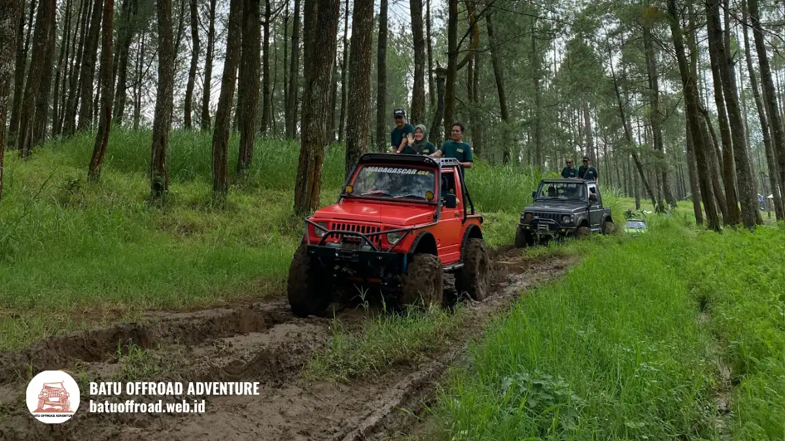

Fun Offroad Coban Talun Batu Panduan Lengkap Paket dan Rute
Fun offroad Coban Talun adalah wisata naik jeep di jalur tanah dan tanjakan sekitar Coban Talun, Kota Batu. Durasinya bervariasi menurut paket dan rute operator, jadi lama pastinya perlu dikonfirmasi saat booking. Umumnya peserta mendapat jeep, driver guide, dan beberapa titik singgah untuk berfoto.
Poin Utama
- Fun offroad Coban Talun adalah wisata jeep berpemandu di kawasan Coban Talun, Kota Batu.
- Isi paket umumnya mencakup jeep, driver guide, dan titik singgah, tetapi rinciannya berbeda antaroperator.
- Durasi dan harga mengikuti paket, sehingga wajib dikonfirmasi ke operator sebelum membayar.
- Pakaian tertutup, alas kaki bertali, dan aturan keselamatan di atas jeep menentukan kenyamanan perjalanan.
- Booking lebih aman dilakukan jauh hari, terutama untuk akhir pekan dan musim liburan.
Apa Itu Fun Offroad Coban Talun?
Fun offroad Coban Talun adalah aktivitas wisata menaiki jeep melewati jalur tanah, batu, dan tanjakan di sekitar Coban Talun, Kota Batu, Jawa Timur.
Coban Talun berada di wilayah pegunungan Kota Batu. Kawasan ini dikenal lewat air terjun dan udara sejuknya. Operator lokal memanfaatkan medan berkontur di sekitarnya untuk menawarkan wisata jeep yang menyenangkan, bukan kompetisi ekstrem.
Kata "fun" menunjukkan bahwa tujuannya rekreasi. Kecepatan dijaga wajar, dan driver guide yang mengenal jalur memegang kendali penuh atas kendaraan.
Peserta cukup duduk, menikmati pemandangan, dan berhenti di titik-titik yang telah ditentukan paket.
Kota Batu sendiri adalah kota wisata yang ramai. Pemkot Batu mencatat 778.235 wisatawan selama libur Lebaran 2025, naik dari 564.622 pada periode yang sama tahun 2024 (ANTARA, April 2025).
Untuk 2024 secara keseluruhan, paparan kinerja Pemkot Batu menyebut angka kunjungan wisata sebesar 10.737.865 wisatawan domestik dan mancanegara.
Angka ini menunjukkan bahwa permintaan wisata di Batu tinggi, sehingga pemesanan jeep pada hari sibuk perlu direncanakan.
Siapa yang cocok mengikuti fun offroad Coban Talun?
Fun offroad Coban Talun cocok untuk wisatawan sehat yang menyukai petualangan ringan, seperti keluarga, pasangan, teman sebaya, dan rombongan kantor.
Peserta yang punya kondisi khusus, misalnya masalah punggung, kehamilan, atau riwayat penyakit jantung, sebaiknya berkonsultasi dengan dokter dan menanyakan batasan peserta ke operator.
Informasi ini bersifat umum dan bukan pengganti saran medis. Ketentuan usia anak juga berbeda antaroperator, sehingga perlu ditanyakan saat booking.
Apa bedanya dengan wisata jeep biasa?
Fun offroad Coban Talun berbeda dari perjalanan jeep biasa karena rutenya melewati jalur tanah dan tanjakan, bukan jalan aspal yang mulus.
Perbedaan ini terasa pada guncangan, debu, dan kemungkinan lumpur saat musim hujan.
Wisatawan yang hanya ingin berkeliling kota dengan nyaman mungkin lebih cocok memilih paket jalur ringan. Wisatawan yang ingin sensasi akan menikmati jalur yang lebih bervariasi.
Apa Saja yang Didapat dalam Paket Fun Offroad Coban Talun?
Paket fun offroad Coban Talun umumnya berisi sewa jeep, driver guide, dan kunjungan ke beberapa titik singgah, dengan rincian tambahan yang berbeda di tiap operator.
Komponen yang paling sering ada dalam paket antara lain:
- Jeep offroad lengkap dengan pengemudi berpengalaman.
- Driver guide yang menjelaskan jalur dan membantu mengambil foto.
- Titik singgah di sepanjang jalur wisata.
- Briefing keselamatan sebelum berangkat.
Beberapa operator menambahkan dokumentasi foto, air mineral, atau tiket masuk objek tertentu. Namun, tidak semua paket menyertakan hal tersebut.
Tanyakan secara tertulis apakah tiket wisata, parkir, dan dokumentasi sudah termasuk atau dibayar terpisah. Pembahasan lebih detail tentang komponen paket tersedia di panduan isi paket fun offroad Coban Talun.

Peserta menikmati serunya fun offroad menggunakan mobil jeep merah melintasi area pegunungan Batu
Bagaimana cara memilih paket yang sesuai?
Cara memilih paket fun offroad Coban Talun adalah mencocokkan durasi, jumlah titik singgah, dan kapasitas jeep dengan anggaran serta jumlah peserta rombongan.
Bandingkan paket dengan parameter yang sama. Perhatikan kapasitas penumpang per jeep, jam keberangkatan, dan apakah harga dihitung per jeep atau per orang. Paket yang lebih murah belum tentu lebih hemat bila banyak biaya tambahan.
Bagaimana Rute Singkat dan Titik Singgahnya?
Rute fun offroad Coban Talun umumnya berangkat dari basecamp operator, melewati jalur tanah kawasan pegunungan, singgah di beberapa titik, lalu kembali ke titik awal.
Rute persisnya ditentukan operator dan dapat berubah menurut kondisi jalur. Titik singgah biasanya dipilih karena pemandangannya, akses ke air terjun, atau area yang aman untuk berhenti dan berfoto.
Kondisi jalur dipengaruhi musim. Saat kemarau, jalur cenderung berdebu. Saat musim hujan, jalur bisa licin dan berlumpur, sehingga operator dapat menyesuaikan rute demi keselamatan.
Rincian titik awal, titik singgah, dan kondisi tiap musim dibahas di artikel rute fun offroad Coban Talun.
Berapa lama fun offroad Coban Talun berlangsung?
Durasi fun offroad Coban Talun bergantung pada paket, panjang rute, jumlah titik singgah, dan waktu berfoto, sehingga operator harus mengonfirmasi lamanya saat pemesanan.
Paket ringkas berhenti di sedikit titik. Paket panjang menambah titik singgah dan waktu santai.
Cuaca dan kepadatan lalu lintas kawasan wisata juga dapat memengaruhi waktu tempuh. Rencanakan agenda hari itu dengan jeda cukup agar tidak terburu-buru.
Apa Saja Persiapan dan Keselamatan untuk Fun Offroad Coban Talun?
Persiapan utama fun offroad Coban Talun meliputi pakaian tertutup, alas kaki tertutup, perlindungan dari debu, serta kepatuhan pada aturan keselamatan di atas jeep.
Berikut persiapan dasar yang aman diterapkan:
- Kenakan pakaian nyaman yang boleh kotor.
- Pakai sepatu atau sandal gunung bertali.
- Bawa masker atau buff, kacamata, dan jaket tipis.
- Amankan ponsel dan kamera agar tidak jatuh.
- Duduk sesuai arahan driver dan jangan berdiri saat jeep melaju.
Keselamatan bergantung pada dua pihak, yaitu operator dan peserta. Operator bertanggung jawab pada kondisi kendaraan dan kemampuan pengemudi.
Peserta bertanggung jawab mengikuti arahan. Daftar barang lengkap ada di checklist persiapan fun offroad Coban Talun.
Baju apa yang cocok untuk offroad di Batu?
Baju yang cocok untuk offroad di Batu adalah pakaian berbahan cepat kering, berlengan panjang, dan berwarna gelap atau netral, ditambah jaket tipis untuk udara sejuk.
Udara pegunungan Kota Batu bisa dingin, terutama pagi hari. Debu dan lumpur mudah menempel, sehingga pakaian berwarna terang cepat terlihat kotor.
Hindari rok panjang, celana terlalu longgar, dan aksesori yang mudah terlepas.
Bagaimana Cara Booking Fun Offroad Coban Talun?
Cara booking fun offroad Coban Talun adalah menghubungi operator, memilih paket, menentukan tanggal dan jam, lalu mengonfirmasi rincian harga dan isi paket sebelum membayar.
Langkah praktisnya:
- Tentukan tanggal, jumlah peserta, dan anggaran.
- Hubungi operator lewat kontak resmi.
- Tanyakan durasi, rute, isi paket, dan biaya tambahan.
- Minta konfirmasi tertulis melalui pesan atau bukti pemesanan.
- Tanyakan kebijakan penjadwalan ulang bila hujan deras.
- Datang ke basecamp sesuai jam yang disepakati.
Booking jauh hari membantu, terutama pada akhir pekan dan libur panjang. Angka kunjungan Kota Batu pada masa libur Lebaran 2025 menunjukkan bahwa periode liburan dapat sangat ramai. Untuk musim liburan, jam keberangkatan yang diinginkan bisa cepat penuh.
Apa Kesalahan Umum Wisatawan Saat Fun Offroad?
Kesalahan umum saat fun offroad Coban Talun adalah salah memilih pakaian, tidak menanyakan isi paket, dan datang tanpa memperhitungkan cuaca serta waktu tempuh.
Kesalahan lain yang sering terjadi:
- Memakai sandal jepit yang mudah lepas.
- Membawa barang berharga tanpa pelindung.
- Tidak menanyakan biaya tambahan.
- Berdiri atau bergerak saat jeep melaju.
- Mengabaikan arahan driver guide.
Hindari semuanya dengan bertanya sebelum berangkat dan mematuhi briefing. Informasi lengkap tentang kesalahan wisatawan ada di artikel persiapan.
Kesimpulan
Fun offroad Coban Talun adalah pilihan wisata petualangan ringan di Kota Batu dengan jeep dan driver guide.
Kunci pengalaman yang aman dan nyaman adalah memilih paket yang jelas, menyiapkan pakaian yang tepat, dan mematuhi aturan keselamatan.
FAQ
- Apa saja yang didapat dalam paket fun offroad?
Paket fun offroad Coban Talun umumnya mencakup jeep, driver guide, dan titik singgah. Beberapa operator menambahkan dokumentasi atau air minum. Tanyakan rincian tertulis agar tidak ada biaya tak terduga. - Apakah fun offroad Coban Talun aman untuk anak-anak?
Keamanan untuk anak bergantung pada kebijakan operator, kondisi jalur, dan pengawasan orang tua. Tanyakan batas usia dan ketersediaan sabuk pengaman atau pegangan sebelum memesan. - Kapan waktu terbaik untuk fun offroad Coban Talun?
Waktu terbaik umumnya pagi hari saat cuaca lebih cerah dan udara sejuk. Musim kemarau cenderung berdebu, sedangkan musim hujan berpotensi licin. Pilih sesuai preferensi dan konfirmasikan kondisi jalur ke operator.
Artikel Terkait